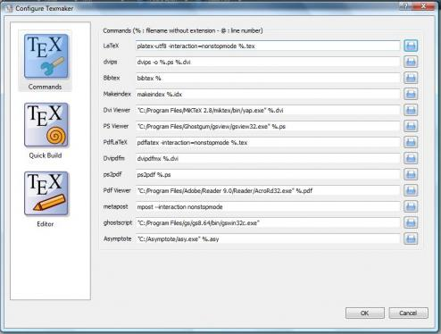
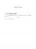

LaTeX est un outil très puissant pour rédiger des documents propres et lisibles, mais étant d'origine Américaine, il n'est pas toujours évident de rédiger dans des langues utilisant des caractères n'existant pas en anglais avec une installation basique. Dans le cas du français, seuls les accents et quelques autres caractères étant à rajouter, l'utilisation de pacakges suffit, mais dans le cas du japonais, qui utilise des caractères à 2 octets (contre 1 octet pour l'anglais), la solution la plus simple est d'utiliser un autre compilateur. C'est que nous allons apprendre à utiliser dans ce tutoriel.
Pour pouvoir suivre ce tutoriel, vous devrez être capable de lire (entre autre les documents PDF) et d'écrire en japonais sur votre ordinateur (et avoir par conséquent les polices adéquats installées), et savoir vous servir un minimum de LaTeX. Pour ce qui ne connaissent encore rien à LaTeX, voir le tutoriel de Laleloulilo sur le sujet.
Tout d'abord, nous allons installer tout ce qui est nécessaire pour pouvoir au minimum compiler votre document en puis convertir le fichier dvi en pdf.
Installation sous Windows
Récupérez depuis ce site le fichier texinst2010.zip et décompressez le dans le dossier où vous souhaitez installer LaTeX. Pour la suite du tutoriel, je vais utiliser le dossier C: ex. Ensuite, récupérez du même site toutes les archives de la section Minimal Installation et les archives dvipdfm-w32.tar.bz2 et vf-a2bk.tar.bz2 de la section Standard installation et sauvegardez les dans un dossier temporaire (j'utiliserai C: emp) sans les décompresser. Les archives que je vous ai fait télécharger sont le strict minimum pour pouvoir créer un document pdf, mais vous pouvez évidemment choisir d'en installer d'autres, si vous pensez en avoir besoin. Ouvrez maintenant une invite de commandes (Démarrer->Accessoires->Invite de commandes) et entrez les lignes suivantes :
cd c:/tex
texinst2010 c:/temp
Si vous avez choisi un autre dossier pour l'installation ou la sauvegarde temporaire des archives, n'oubliez pas d'adapter les lignes ci-dessus. Attendez alors la fin de l'installation. Ensuite, téléchargez le fichier jsclasses-100314.zip depuis ce site, et décompressez le dans C: ex\share exmf ex\platex\base. Vous n'avez maintenant plus qu'à régler vos variables d'environnement. Pour cela, cliquez droit sur Ordinateur (Windows Vista/Seven) ou Poste de travail (Windows XP) puis ouvrez les Propriétés. Ouvrez ensuite les Paramètres système avancés (Windows Vista/Seven) ou allez dans l'onglet Avancé (Windows XP) puis cliquez sur Variables d'environnement. Dans les Variables systèmes, cherchez la variable Path, et avec le bouton Modifier ajoutez en fin de ligne C: ex\bin, sans oublier de mettre un point-virgule avant, si il n'y en avait pas.
Vous devriez donc avoir une Valeur de la variable qui ressemble à ça :
Sous Linux, l'installation se veut relativement simple, mais est au final plus compliquée que sous Windows. Commencez tout d'abord par installer les paquets suivants.
C'est ici que les choses se compliquent un peu. Nous avons déjà tout ce qu'il faut pour faire de beaux documents en japonais, mais le problème est que dvipdfmx, qui devrait nous transformer notre document dvi en pdf, ne sais pas encore comment trouver les polices, il va donc falloir le lui indiquer. Pour ceci, il faut rajouter à la fin du fichier /etc/texmf/dvipdfmx/dvipdfmx.cfg, f jis-cjk.map. Vous pouvez utiliser la commande :
Si vous recevez un message "Permission non accordée", essayez en faisant sudo su, et n'oubliez pas de quitter le mode root en tapant exit quand vous aurez fini. Ensuite, téléchargez l'archive dvipdfm-w32.tar.bz2 depuis ce site. Pour la suite, je prendrai comme dossier pour l'archive ~/Téléchargements, donc si vous l'avez placée ailleurs, n'oubliez pas d'adapter les commandes. Tout d'abord, il faut récupérer le dossier share/texmf/fonts/map/agl de l'archive, puis le copier dans le répertoire ~/.texmf-var/fonts/map/agl. Vous pouvez faire ça en tapant les commandes suivantes :
Il ne reste maintenant qu'une seule chose à faire, créer un lien symbolique vers les polices utilisés, ce qui peut se faire avec la commande suivante :
Si vous êtes habitué à votre éditeur LaTeX et que vous ne souhaitez pas le changer, vous pouvez passer directement à la partie suivante. Sachez simplement que sous Linux, il faut que votre éditeur gère au moins l'encodage EUC-JP ou Shift-JIS. Sous Windows, on peut utiliser UTF-8, donc pas de problème.
Installation de Texmaker
Sous Windows
L'installation est d'une simplicité extrème, il suffit de télécharger l'installateur de ce site et de suivre la procédure d'installation.
Sous Linux
Pour Linux, l'installation est tout aussi simple. Il suffit d'installer le paquet texmaker, donc pour Ubuntu, utiliser la commande
sudo apt-get install texmaker
et le tour est joué.
Configurer Texmaker
Il va maintenant falloir configurer Texmaker, pour que l'encodage soit adapté, et par la même occasion, on va aussi configurer la compilation rapide.
Ouvrez donc Texmaker, et aller dans Configurer Texmaker, dans le menu Options. A la ligne LaTeX, remplacez latex par platex pour Linux, et par platex-utf8 pour Windows. Ensuite, dans la ligne Dvipdfm, remplacez dvipdfm par dvipdfmx. Pour finir, cochez l'Afficheur Pdf externe et inidiquez celui que vous utilisez pour lire les documents PDF en japonais. Si vous êtes sous Windows, la configuration devrait ressembler à ceci :

Rendez-vous ensuite dans l'onglet Compil Rapide et choisissez Latex + Dvipdfm + View PDF. Passez pour finir dans l'onglet Editeur, et choisissez l'encodage UTF-8 pour Windows et EUC-JP pour Linux. Pensez aussi à desactiver l'option A la volée dans Dictionnaire, le logiciel ne disposant pas de dictionnaire japonais. Nous avons fini de configurer Texmaker pour le japonais.
Ouvrez maintenant votre éditeur préféré, en prenant bien soin de choisir l'encodage indiqué ci-dessus. La plus grosse différence avec vos documents habituels va être le type de document : il va falloir indiquer ici \documentclass{jsarticle} pour un document de type article, \documentclass{jsbook} pour un document de type book etc... Notez qu'il existe aussi les types jarticle, jbook, etc, mais qui sont beaucoup plus vieux et sont devenus plus ou moins obsolètes. Cependant vous pouvez essayer de les utiliser pour constater la différence. Pour le reste, ça ne change quasiment pas d'un document ordinaire. Une petite remarque concerne l'utilisation de extit{texte} , l'italique ne fonctionnant pas en japonais, cette commande devient obsolète. Quant à \emph{texte} , il faut mieux l'éviter et préferer extbf{texte} pour être sûr d'obtenir le résultat escompté.
Compilation du document
Pour finir, on va voir comment compiler notre chef-d'oeuvre. Voici le fichier que je vais compiler : test.tex
Pour ceux qui ont choisi d'utiliser Texmaker, un simple appui sur F1 et vous devriez avoir votre document qui apparait dans votre lecteur PDF préféré. Pour ceux qui compilent à la main, les commandes sont :
platex test.tex
dvipdfmx test.dvi
et vous n'aurez plus qu'à ouvrir le fichier PDF créé. Si tout s'est bien passé, votre fichier PDF devrait ressembler à ceci :
Si vous avez bien suivi ce tutoriel, vous devriez maintenant être capable de réaliser un document LaTeX en japonais sans problème, vous pourrez donc éviter d'avoir à abuser du package CJK si vous avez des documents en japonais à rédiger.
{kind=link}